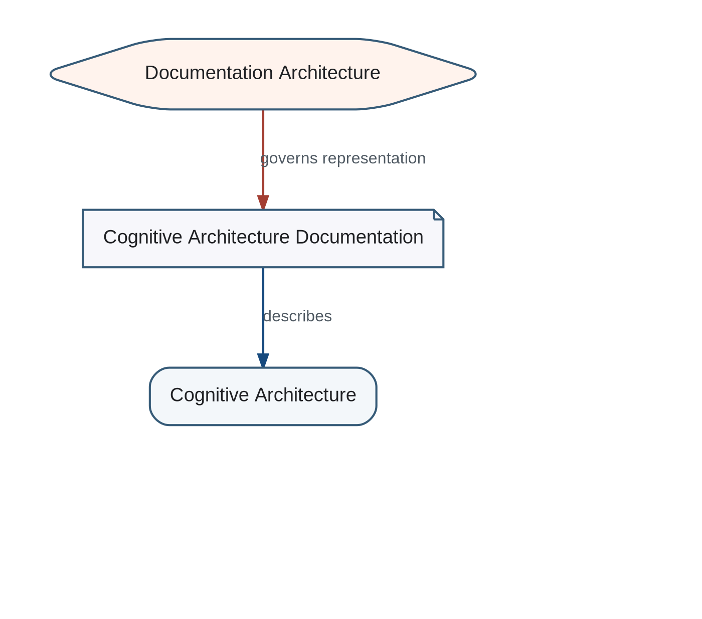

Documentation Architecture governs how knowledge about the Cognitive architecture is represented, related, generated, and validated. It is part of the project Single Source of Truth.
Three-Level Self-Describing Project

Chapter 24
Section 24.1
Documentation Architecture governs how knowledge about the Cognitive architecture is represented, related, generated, and validated. It is part of the project Single Source of Truth.
